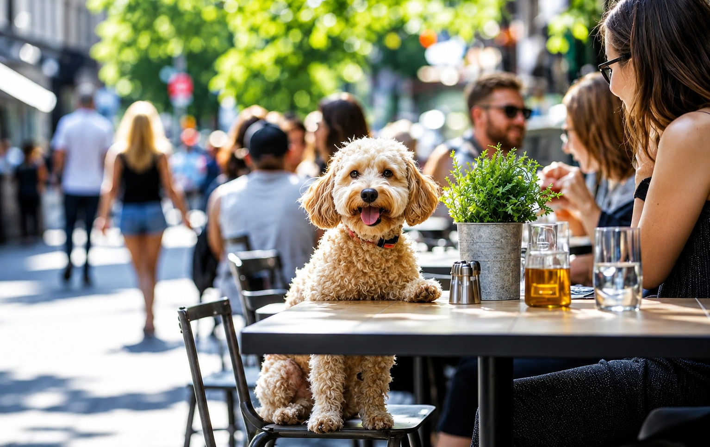

Pet-Friendly Cafés in Philadelphia
Looking for a spot to grab a coffee while your dog enjoys the fresh air? These Philadelphia cafés offer pet-friendly outdoor seating where well-behaved pets are welcome.

Pet-Friendly Café Spots
La Colombe (Multiple Locations)
A popular Philadelphia coffee roaster with several locations across the city. Many La Colombe locations have outdoor seating areas that welcome leashed dogs. Check individual locations for outdoor seating availability.
Rival Bros Coffee Bar
Located in West Philadelphia, Rival Bros is a neighborhood favorite with outdoor seating. Dogs on leashes are generally welcome at the outdoor tables. Always confirm with staff on arrival.
ReAnimator Coffee (Fishtown)
A beloved local coffee roaster in Fishtown with a relaxed atmosphere. Outdoor seating is available and friendly to leashed dogs. Known for its community-focused vibe.
Visiting Tips
- Always call or check the café's website ahead of time to confirm their current pet policy.
- Pets are typically only allowed at outdoor seating - never bring your dog inside a café.
- Keep your dog leashed and seated near your table at all times.
- Bring water for your dog, especially on warm days.
- Choose a less busy time of day to visit if your dog is easily excitable around crowds.